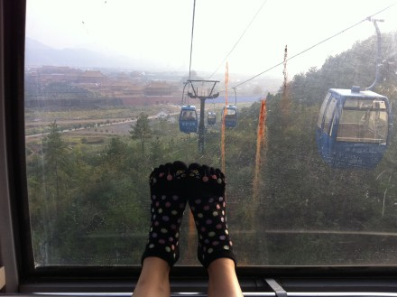

只要发生了其中一件，就会影响到拍戏，影响到整个剧组...除了担心自己更要为别人担心和负责...
人在身体不舒服的时候其实很想被关心和照顾，曾经有一次在自己重感冒的时候约了最交心的朋友喝东西聊天，见面时，和往常一样想迎上去给对方一个贴面的拥抱时被对方拒绝了，“你感冒了，不能传给我”朋友这样说，我当时没太在意，就想朋友说的没错。当天我们没有像往常一样的聊闲话，朋友严肃的给我上了一课”你不可以感冒的，你也不允许生病，你生病就会影响到工作，不要以为自己年轻抗的住，你有一点点不舒服时站在台上面对观众就是不负责，对自己不负责，对你的公司不负责，很有可能因为你的一次小的失误，给自己给身边的人带来大麻烦...有些人生病了不吃药，总想快点靠自己好起来，因为药物确实对身体有利有弊，除非你死了，不然就会因为你拖累到太多的太多的事情，所以你就必须吃药在最短的时间里好起来，去做该做的事情...“
那天朋友的话我一直记在心里，我很幸福身边有那么多真正爱我的人
